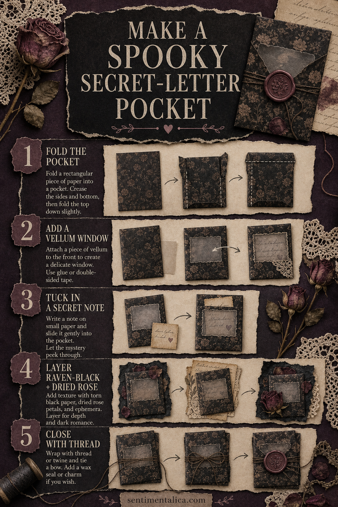

A spooky journal element does not need bright orange paper or novelty motifs. A folded pocket in raven black, faded rose and candlelit cream can feel mysterious long after Halloween—and it gives the page something interactive to discover.

Materials
- One rectangle of printed paper, about 15 × 20 cm
- A small piece of vellum
- Glue or narrow double-sided tape
- Dark thread or fine twine
- A scrap for the secret note
- Optional dried rose petals, black paper and a wax seal
1. Fold the pocket
Place the printed side down. Fold the two long edges inward by about 1.5 cm, then fold the bottom upward to create the pocket depth. Crease firmly and glue only the side tabs. Leave the top open.
2. Add a vellum window
Tear or cut a small opening in the front layer before sealing the sides. Attach vellum behind it. An uneven opening suits the aged look and lets a few handwritten words show through without revealing the whole note.
3. Make the secret message
Cut a note slightly narrower than the finished pocket. Distress the edges lightly with brown ink or diluted watercolor. Write a line from an imagined letter, a private journal prompt or a tiny seasonal memory. Slide it inside so the most intriguing fragment appears behind the vellum.

4. Build one dark floral cluster
Layer a torn piece of raven-black paper, one muted rose fragment and a small botanical. Keep the cluster on one corner rather than decorating every edge. That asymmetry makes the pocket feel discovered rather than manufactured.
5. Close it with thread
Wrap dark thread around the pocket twice and tie a small bow. If the pocket will be opened often, attach the thread beneath a button or paper circle instead of using wax. For a display page, a small seal makes a beautiful final detail.
The Raven Rose artwork already carries the atmosphere—black woodwork, old books, candlelight and dusty roses—so it works especially well as the main printed layer. Pair it with plain cream paper so the dark details remain readable.